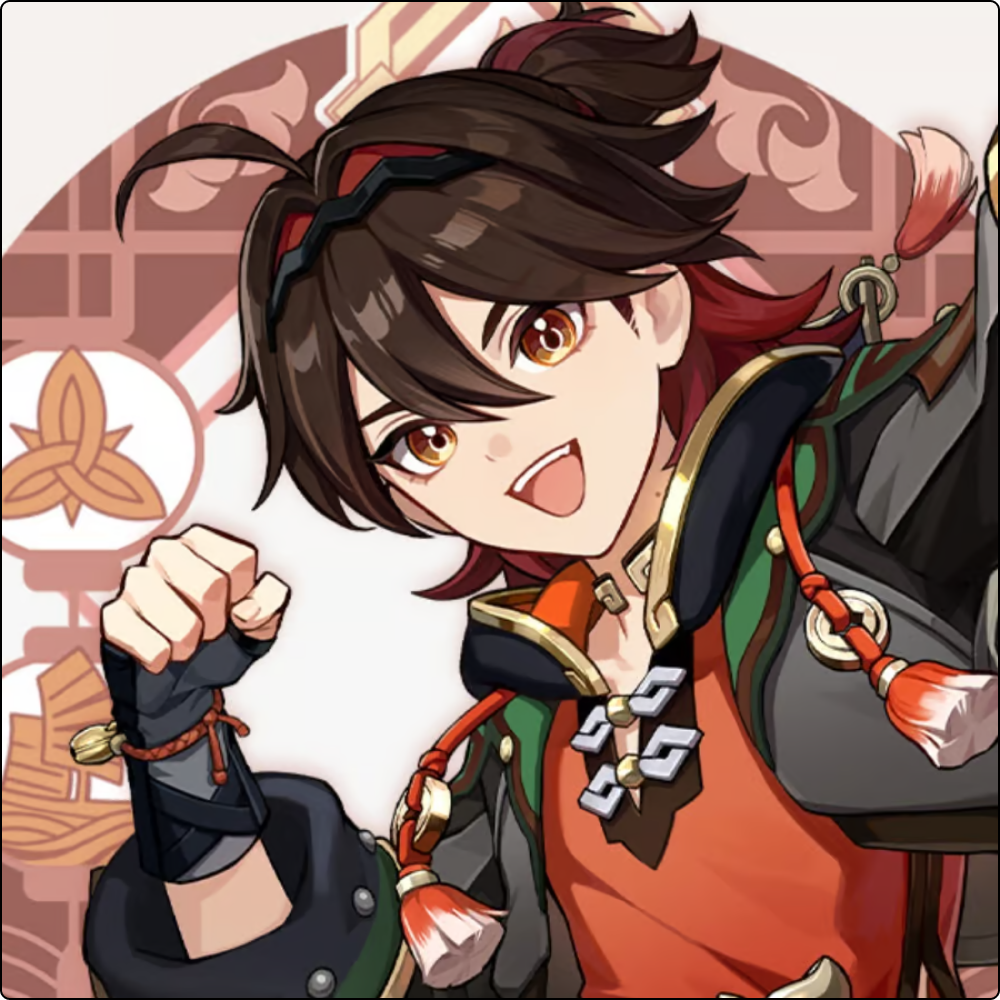

Gaming
Liyue
Element: Pyro
Weapon: Claymore
Rarity: ⭐⭐⭐⭐
Yip Gaming (Cantonese: 叶嘉明) is a playable Pyro character in Genshin Impact.
Born in Qiaoying Village, Gaming left his birthplace after an impasse with his father to pursue his passion and become a professional Wushou dancer, training constantly to make the dance popular throughout Teyvat. However, with his dream career turning out to be financially unsustainable, he also took up a job as a guard for the Sword and Strongbox Secure Transport Agency, primarily escorting goods and people to and from Yilong Wharf. His diligence and friendliness have earned him renown, and he is considered to be the best guard in the agency.
Gaming is a young and energetic man working for the Sword and Strongbox Secure Transport Agency. He has a very strong work ethic, eagerly completing whatever his clients may ask of him and will fiercely protect their cargo regardless of the situation. He also enjoys Wushou Dances, something which he practices regularly on a daily basis, wanting to become a professional dancer. This practice has made him nimble and proficient in martial arts, despite the numerous injuries he obtains doing so. As such, he is well-liked by the people of Yilong Wharf, who see him as reliable and optimistic.